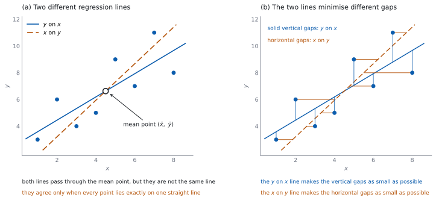

SL 4.10 — The regression line of \(x\) on \(y\)（\(x\) を \(y\) で表す回帰直線）
- regression line of \(x\) on \(y\)（\(x\) を \(y\) で表す回帰直線）が、\(y\) on \(x\) とは別の直線であることを説明できる。
- 予測したいのがどちらの変数かを見て、使う直線を選べる。
- GDC で \(x\) on \(y\) の直線 \(x = cy + d\) を求められる。
- その直線で、\(y\) の値から \(x\) を予測できる。
- \(x\) on \(y\) の直線で \(y\) を予測してはいけない理由を述べられる。
- \(2\) 本の直線がどちらも平均点 \((\bar{x},\ \bar{y})\) を通ることを使って、検算できる。
The idea
1. なぜ \(2\) 本目の直線が要るのか
SL 4.4 では、\(y\) を \(x\) で表す回帰直線 \(y = ax + b\) を求めました。あれは \(y\) を予測するための直線です。
では、\(y\) が分かっていて \(x\) を予測したいときはどうするのでしょうか。 \(y = ax + b\) を \(x\) について解けばよさそうに見えますが、それは正しくありません。
\(2\) 本の直線は、ちがう直線です（図 1 (a)）。\(y\) on \(x\) の直線を式変形しても、\(x\) on \(y\) の直線にはなりません。
予測したい変数に合わせて、はじめから引きなおします。 これが regression line of \(x\) on \(y\)（\(x\) を \(y\) で表す回帰直線）です。
2. どちらの直線を使うか
| 与えられるもの | 予測したいもの | 使う直線 |
|---|---|---|
| \(x\) | \(y\) | \(y\) on \(x\)（\(y = ax + b\)） |
| \(y\) | \(x\) | \(x\) on \(y\)（\(x = cy + d\)） |
「予測したいほう」が、式の左辺に来ます。 ここだけ覚えれば選べます。
問題文の順番にまどわされないでください。 「\(x\) が \(30\) のときの \(y\)」でも「\(y\) が \(30\) のときの \(x\)」でも、判断のもとは何を予測するかだけです。
3. \(x = cy + d\) の形
\(x\) on \(y\) の直線は
\[ x = cy + d \tag{1}\]
の形に書きます。
\(c\) と \(d\) は、\(y = ax + b\) の \(a\) と \(b\) から作れる数ではありません。 GDC で、\(x\) と \(y\) の役割を入れかえて出しなおします。
\(c\) の意味は「\(y\) が \(1\) 増えるごとの \(x\) の増え方」です。 \(a\) の逆数ではありません。
この式は公式集にありません。 SL 4.4 の \(y = ax + b\) と同じで、係数は GDC で出します。
シラバスは回帰直線の式をGDC で求めるとしているので、Paper 2 の項目です。
4. GDC での出し方
SL 4.4 の GDC の節と同じ操作ですが、\(X\) と \(Y\) に入れる列を入れかえます。
- \(y\) on \(x\) … \(x\) の列を先、\(y\) の列をあとに指定する
- \(x\) on \(y\) … \(y\) の列を先、\(x\) の列をあとに指定する
出てくる m と b の読みかえに注意してください。 列を入れかえたときの m は \(c\)、b は \(d\) です。
答案には \(x = \ldots\) の形で書きます。 変数名を入れかえたまま \(y = \ldots\) と書くと、どちらの直線か分かりません。
相関係数 \(r\) は、入れかえても同じ値です。 ここは検算に使えます。
5. 予測に使う
\(y\) の値が分かっているとき、式 1 にそのまま入れます。
予測は、データの範囲の中でだけ信頼できます。 範囲の外に出るのは extrapolation（外挿）で、SL 4.4 と同じ注意が要ります。
\(r\) が \(0\) に近いときは、どちらの直線も役に立ちません。 直線の当てはまりが悪いからです。
6. \(x\) on \(y\) の直線で \(y\) を予測しない
\(x = cy + d\) を \(y\) について解いてはいけません。
\[ y = \frac{x - d}{c} \]
この式は「\(x\) on \(y\) の直線を書きなおしたもの」であって、\(y\) を予測するための直線ではありません。\(y\) を予測するなら、\(y\) on \(x\) の直線を使います。
逆も同じです。 \(y = ax + b\) を \(x\) について解いた式で \(x\) を予測してはいけません。
なぜかは Why it works で説明します。 最小にしているずれの向きが、\(2\) 本でちがうからです。
7. \(2\) 本の直線の関係
どちらの直線も、平均点 \((\bar{x},\ \bar{y})\) を通ります（図 1 (a)）。これは強力な検算です。
\(2\) 本は、最小にしているずれがちがいます。 \(y\) on \(x\) は縦方向のずれの \(2\) 乗の和を、\(x\) on \(y\) は横方向のずれの \(2\) 乗の和を、それぞれ最小にします（図 1 (b)）。だから、一方を式変形してもう一方にすることはできません。
\(a\) と \(c\) は、どちらも \(r\) と同じ符号です。 符号がちがっていたら、どこかで入力をまちがえています。
\(r = \pm 1\) のときだけ、\(2\) 本は一致します。 そのときは全部の点が \(1\) 本の直線の上にあり、どちらの向きに測ってもずれが \(0\) だからです。
\(r\) が \(0\) に近いほど、\(2\) 本は大きくちがってきます。 \(y\) on \(x\) の傾きは \(a = r \times \dfrac{\sigma_y}{\sigma_x}\) なので、\(r \to 0\) では水平な直線 \(y = \bar{y}\) に近づきます。\(x\) on \(y\) の傾きは \(c = r \times \dfrac{\sigma_x}{\sigma_y}\) なので、こちらは垂直な直線 \(x = \bar{x}\) に近づきます。このとき、どちらの直線も予測には向きません。
シラバスは、回帰直線の式をGDC で求めるとしています。だから、係数を求める問題は Paper 2 で出ます。
単元全体が Paper 1 の対象外というわけではありません。 どちらの向きの回帰を使うか、平均点を通ること、\(|r| = 1\) のときに \(2\) 本が一致することは、電卓なしでも問われます。
答えの見当も、手でつけられます。 平均点を通るか、符号が \(r\) と合っているか、\(|r| \le 1\) になっているか ——この \(3\) つで、入力ミスのほとんどは見つかります。

Why it works
なぜ、\(2\) 本の直線がちがうのでしょうか。 最小にしているずれの向きがちがうからです（図 1 (b)）。
- \(y\) on \(x\) の直線は、縦のずれ（\(y\) の方向のずれ）の \(2\) 乗の和を最小にします。
- \(x\) on \(y\) の直線は、横のずれ（\(x\) の方向のずれ）の \(2\) 乗の和を最小にします。
別のものを最小にしているので、出てくる直線も別になります。 式変形で移り合わないのは、このためです。
なぜ、どちらも平均点を通るのでしょうか。 どちらの直線も、ずれの \(2\) 乗の和を最小にした結果として、ずれの和が \(0\) になることが知られているからです。
\(y\) on \(x\) なら、\(y_i - (a x_i + b)\) の和が \(0\) になります。両辺を \(n\) で割ると
\[ \bar{y} - (a\bar{x} + b) = 0 \]
つまり \(\bar{y} = a\bar{x} + b\) です。平均点が直線の上にあります。 \(x\) on \(y\) も、\(x\) と \(y\) を入れかえて同じ議論ができます。
なぜ、式変形では、もう一方の直線にならないのでしょうか。
\(y = ax + b\) を \(x\) について解くと \(x = \dfrac{1}{a}y - \dfrac{b}{a}\) です（\(a \ne 0\)）。これは縦方向のずれを最小にして得た直線を、書き直しただけです。\(x\) on \(y\) は、横方向のずれを最小にして別に求めたものなので、ふつうは一致しません。
一致するのは、\(r = \pm 1\) のときだけです。 全部の点が \(1\) 本の直線の上にあれば、縦のずれも横のずれもどちらも \(0\) になり、同じ直線が選ばれます。
\(r\) が \(0\) に近いと、\(2\) 本はどうなるのでしょうか。 \(2\) つの傾きは \(a = r \times \dfrac{\sigma_y}{\sigma_x}\)、\(c = r \times \dfrac{\sigma_x}{\sigma_y}\) と書けるので、\(r \to 0\) ではどちらも \(0\) に近づきます。\(y\) on \(x\) は水平な直線 \(y = \bar{y}\) に、\(x\) on \(y\) は垂直な直線 \(x = \bar{x}\) に近づきます。
このとき、どちらの直線も予測には向きません。 \(2\) 本が大きくちがうということは、どちらの向きの予測もあてにならない、ということです。
Worked examples
問題文は英語です。意味が理解できなかったら、問題文の下の「日本語訳」を開いてください。解説は日本語です。
回帰直線の係数は GDC で出します（Paper 2）。 向きの選び方や平均点の確認は、電卓なしでも進めます。どの問題で GDC を使うかは、演習のまえがきに書きました。答えは有効数字 \(3\) 桁（\(3\) significant figures）で書きます。
例題 1 The table shows six pairs of values of \(x\) and \(y\).
| \(x\) | \(2\) | \(4\) | \(5\) | \(7\) | \(8\) | \(10\) |
|---|---|---|---|---|---|---|
| \(y\) | \(9\) | \(15\) | \(11\) | \(19\) | \(14\) | \(20\) |
(a) Find the value of \(r\).
(b) Find the equation of the regression line of \(x\) on \(y\).
(c) Use your line to estimate the value of \(x\) when \(y = 16\).
(d) Explain why rearranging the regression line of \(y\) on \(x\) would not give the same estimate.
日本語訳
表は \(x\) と \(y\) の \(6\) 組の値を示しています。
(a) \(r\) の値を求めなさい。
(b) \(x\) を \(y\) で表す回帰直線の式を求めなさい。
(c) その直線を使って、\(y = 16\) のときの \(x\) の値を推定しなさい。
(d) \(y\) を \(x\) で表す回帰直線を式変形しても同じ推定にならない理由を説明しなさい。
(a) GDC の Linear Regression で出します（SL 4.4 の GDC の節）。r の欄がそれです。
\[ r = 0.799 \ (3 \text{ s.f.}) \]
(b) \(y\) の列を先、\(x\) の列をあとに指定します（第 4 節）。
\[ x = 0.536y - 1.86 \ (3 \text{ s.f.}) \]
(c) 式 1 に \(y = 16\) を入れます。
\[ x = 0.53571(16) - 1.85714 = 6.71 \ (3 \text{ s.f.}) \]
(d) Explain why なので、英語で理由を書きます。
試験ではこう書く
The two lines minimise gaps in different directions: the line of \(y\) on \(x\) minimises the vertical gaps and the line of \(x\) on \(y\) minimises the horizontal gaps. They are therefore different lines, and rearranging one does not produce the other. Here the \(y\) on \(x\) line rearranged gives \(x = 7.12\), not \(6.71\).
（\(2\) 本の直線は、最小にしているものがちがう。\(y\) on \(x\) は縦のずれ、\(x\) on \(y\) は横のずれを最小にしている。だから別の直線であり、一方を式変形しても他方にはならない。実際 \(y\) on \(x\) を変形すると \(7.12\) になり、\(6.71\) とはちがう、という意味です。）
検算（(b) について、平均点で）。 \(\bar{x} = 6\)、\(\bar{y} = \dfrac{88}{6} \approx 14.667\) です。\(0.53571(14.667) - 1.85714 = 6.00\) ✓ 直線は平均点を通ります。
検算（(b) について、符号で）。 \(r > 0\) なので、\(c\) も正のはずです。\(0.536 > 0\) ✓
検算（(c) について、範囲で）。 \(y = 16\) はデータの \(y\) の範囲（\(9\) から \(20\)）の中にあります ✓ 外挿ではありません。また \(x = 6.71\) もデータの \(x\) の範囲（\(2\) から \(10\)）の中です。
検算（(d) について、符号で）。 \(r = 0.799 > 0\) で、\(y\) on \(x\) の傾き \(1.19048\) も \(x\) on \(y\) の傾き \(0.53571\) も正です ✓ \(3\) つの符号がそろっています（第 7 節）。
検算（式変形とくらべて）。 \(y\) on \(x\) を \(x\) について解くと傾きは \(\dfrac{1}{1.19048} \approx 0.84\) ですが、\(x\) on \(y\) の傾きは \(0.53571\) です ✓ 一致しないので、\(2\) 本は別の直線です。
(a) \[r = 0.799\]
(b) \[x = 0.536y - 1.86\]
(c) \[x = 0.53571(16) - 1.85714 = 6.71\]
(d) the two lines minimise gaps in different directions, so rearranging one does not give the other; here the \(y\) on \(x\) line rearranged gives \(7.12\)
例題 2 For a set of bivariate data, the regression line of \(y\) on \(x\) is \(y = 1.5x + 4\) and the regression line of \(x\) on \(y\) is \(x = 0.6y - 2.2\).
(a) Find the mean point of the data.
(b) Estimate the value of \(x\) when \(y = 10\).
(c) Estimate the value of \(y\) when \(x = 5\).
(d) Explain why a different line was used in part (b) from the one used in part (c).
日本語訳
ある \(2\) 変量データについて、\(y\) を \(x\) で表す回帰直線は \(y = 1.5x + 4\)、\(x\) を \(y\) で表す回帰直線は \(x = 0.6y - 2.2\) です。
(a) データの平均点を求めなさい。
(b) \(y = 10\) のときの \(x\) の値を推定しなさい。
(c) \(x = 5\) のときの \(y\) の値を推定しなさい。
(d) (b) と (c) でちがう直線を使った理由を説明しなさい。
(a) どちらの直線も平均点を通ります（第 7 節）。だから \(2\) 本の交点が平均点です。
\(1\) つ目の式を \(2\) つ目に代入します。\(0.6 \times 4 = 2.4\) で、\(2.4 - 2.2 = 0.2\) です。
\[ x = 0.6(1.5x + 4) - 2.2 = 0.9x + 0.2 \]
\[ 0.1x = 0.2, \qquad \bar{x} = 2 \]
\[ \bar{y} = 1.5(2) + 4 = 7 \]
平均点は \((2,\ 7)\) です。
(b) \(x\) を予測するので、\(x\) on \(y\) の直線を使います（表 1）。
\[ x = 0.6(10) - 2.2 = 3.8 \]
(c) \(y\) を予測するので、\(y\) on \(x\) の直線を使います。
\[ y = 1.5(5) + 4 = 11.5 \]
(d) Explain why なので、英語で理由を書きます。
試験ではこう書く
Each regression line is built to predict the variable on its left-hand side. In part (b) the value of \(x\) is required, so the line of \(x\) on \(y\) is used, and in part (c) the value of \(y\) is required, so the line of \(y\) on \(x\) is used. Using the other line would minimise gaps in the wrong direction.
（それぞれの回帰直線は、左辺の変数を予測するために作られている。(b) では \(x\) が必要なので \(x\) on \(y\)、(c) では \(y\) が必要なので \(y\) on \(x\) を使う。もう一方を使うと、ちがう向きのずれを最小にした直線を使うことになる、という意味です。）
検算（(a) について、もう一方の式でも）。 \(x = 0.6(7) - 2.2 = 4.2 - 2.2 = 2\) ✓ 平均点は両方の直線の上にあります。
参考（与えられた \(2\) 本に矛盾がないか）。 傾きはどちらも正で、\(r\) の符号とそろいます。また \(2\) 本は \(1\) 点で交わり、その点が平均点になります（第 7 節）。
なぜそうなるか（まちがった直線を使ったら）。 \(y = 1.5x + 4\) を変形すると \(x = \dfrac{10 - 4}{1.5} = 4\) です。\(3.8\) とちがいます。どちらの直線を使うかで答えが変わります。
検算（(c) について、範囲で）。 \(x = 5\) に対して \(y = 11.5\) です。\(y\) on \(x\) の傾きが正なので、\(x\) が平均 \(2\) より大きければ \(y\) も平均 \(7\) より大きくなるはずです ✓
(a) substituting: \(x = 0.6(1.5x + 4) - 2.2 = 0.9x + 0.2\) \[0.1x = 0.2 \implies \bar{x} = 2, \qquad \bar{y} = 1.5(2) + 4 = 7\]
(b) \[x = 0.6(10) - 2.2 = 3.8\]
(c) \[y = 1.5(5) + 4 = 11.5\]
(d) each line predicts the variable on its left-hand side, so \(x\) on \(y\) is used to find \(x\) and \(y\) on \(x\) is used to find \(y\)
例題 3 A coach records the age, \(x\) years, and the time taken to complete a task, \(y\) seconds, of six young athletes.
| \(x\) | \(10\) | \(14\) | \(16\) | \(20\) | \(22\) | \(26\) |
|---|---|---|---|---|---|---|
| \(y\) | \(38\) | \(50\) | \(44\) | \(58\) | \(49\) | \(61\) |
(a) Find the equation of the regression line of \(x\) on \(y\).
(b) Use your line to estimate the age of an athlete whose time is \(55\) seconds.
(c) The researcher instead rearranges the regression line of \(y\) on \(x\), which is \(y = 1.24x + 27.7\), and obtains \(22.0\) years. Comment on the difference between the two estimates.
日本語訳
あるコーチが、\(6\) 人の若い選手について年齢 \(x\)（歳）とある課題を終える時間 \(y\)（秒）を記録しました。
(a) \(x\) を \(y\) で表す回帰直線の式を求めなさい。
(b) その直線を使って、時間が \(55\) 秒の選手の年齢を推定しなさい。
(c) この研究者は、かわりに \(y\) を \(x\) で表す回帰直線 \(y = 1.24x + 27.7\) を式変形して、\(22.0\) 歳という値を得ました。\(2\) つの推定値のちがいについて述べなさい。
(a) \(y\) の列を先、\(x\) の列をあとに指定します。
\[ x = 0.568y - 10.4 \ (3 \text{ s.f.}) \]
(b) \(y = 55\) を入れます。
\[ x = 0.56831(55) - 10.41530 = 20.8 \ (3 \text{ s.f.}) \]
(c) Comment on なので、英語で書きます。
試験ではこう書く
The two values differ because they come from different lines. To estimate \(x\) from \(y\) the correct line is the one of \(x\) on \(y\), which gives \(20.8\) years. Rearranging the \(y\) on \(x\) line gives \(22.0\) years, but that line is built to predict \(y\) from \(x\), so its rearrangement is not a regression line for \(x\) and \(20.8\) should be used.
（\(2\) つの値がちがうのは、別の直線から出ているからである。\(y\) から \(x\) を推定するのに正しいのは \(x\) on \(y\) の直線で、\(20.8\) 歳になる。\(y\) on \(x\) を変形すると \(22.0\) 歳になるが、その直線は \(x\) から \(y\) を予測するためのものなので、変形しても \(x\) の回帰直線にはならない。\(20.8\) を使うべきである、という意味です。）
検算（(a) について、平均点で）。 \(\bar{x} = 18\)、\(\bar{y} = 50\) です。\(0.56831(50) - 10.41530 = 18.0\) ✓
検算（(a) について、符号で）。 \(r = 0.839 > 0\) なので、\(c\) も正のはずです。\(0.568 > 0\) ✓
検算（(b) について、平均との位置で）。 \(y = 55\) は \(\bar{y} = 50\) より大きく、\(c > 0\) なので、\(x\) も \(\bar{x} = 18\) より大きくなるはずです。\(20.8 > 18\) ✓
検算（(c) について、式変形とくらべて）。 \(y\) on \(x\) を \(x\) について解くと傾きは \(\dfrac{1}{1.23810} \approx 0.80769\) ですが、\(x\) on \(y\) の傾きは \(0.56831\) です ✓ 一致しないので、\(2\) 本は別の直線です。
(a) \[x = 0.568y - 10.4\]
(b) \[x = 0.56831(55) - 10.41530 = 20.8 \text{ years}\]
(c) the estimates differ because the lines differ; \(x\) on \(y\) is the correct line for estimating \(x\), so \(20.8\) should be used
例題 4 For a set of data on daily temperature, \(x\) °C, and daily ice-cream sales, \(y\), the regression line of \(x\) on \(y\) is \(x = 0.041y + 12.6\). The values of \(y\) in the data range from \(200\) to \(600\).
(a) Interpret the value \(0.041\) in the context of the data.
(b) Estimate the temperature on a day when sales are \(400\).
(c) Estimate the temperature on a day when sales are \(900\).
(d) Comment on the reliability of your answer to part (c).
日本語訳
ある日ごとの気温 \(x\)（℃）とアイスクリームの売上 \(y\) のデータについて、\(x\) を \(y\) で表す回帰直線は \(x = 0.041y + 12.6\) です。データの \(y\) の値は \(200\) から \(600\) の範囲です。
(a) \(0.041\) という値を、このデータの文脈で解釈しなさい。
(b) 売上が \(400\) の日の気温を推定しなさい。
(c) 売上が \(900\) の日の気温を推定しなさい。
(d) (c) の答えの信頼性について述べなさい。
(a) Interpret なので、英語で書きます。
試験ではこう書く
The value \(0.041\) is the gradient of the line of \(x\) on \(y\). It estimates that, on average, the temperature is about \(0.041\) °C higher for each extra ice cream sold. It describes an association only, and does not mean that selling more ice cream causes the temperature to rise.
（\(0.041\) は \(x\) on \(y\) の直線の傾きなので、売上が \(1\) 増えるごとに対応する気温の増え方を表す。平均して、売上が \(1\) 増えるごとに気温は約 \(0.041\) ℃ 高い。これは関連を表すだけで、売上が気温を変える原因だという意味ではない、という意味です。）
(b) \(y = 400\) を入れます。
\[ x = 0.041(400) + 12.6 = 16.4 + 12.6 = 29.0 \]
(c) \(y = 900\) を入れます。
\[ x = 0.041(900) + 12.6 = 36.9 + 12.6 = 49.5 \]
(d) Comment on なので、英語で書きます。
試験ではこう書く
The value \(900\) lies well outside the range \(200\) to \(600\) covered by the data, so this is extrapolation. There is no evidence that the linear relationship continues that far, and \(49.5\) °C is an extreme temperature. The estimate in part (c) is therefore unreliable, while the estimate in part (b) uses a value inside the data range.
（\(900\) はデータの範囲 \(200\) から \(600\) の外にあるので、これは外挿である。直線の関係がそこまで続くという根拠はなく、\(49.5\) ℃ は極端な気温である。だから (c) の推定は信頼できない。(b) はデータの範囲の中の値を使っている、という意味です。）
検算（(b) について、範囲で）。 \(y = 400\) は \(200\) と \(600\) の間です ✓ 内挿なので、より信頼できます。
検算（(b) と (c) の差で）。 \(y\) が \(500\) 増えると \(x\) は \(0.041 \times 500 = 20.5\) 増えるはずです。\(49.5 - 29.0 = 20.5\) ✓
検算（(c) の値の常識で）。 \(49.5\) ℃ という気温は、ほとんどの土地で起こりません ✓ 外挿の答えが現実的でないことの目印です。
(a) for each extra unit of sales, the temperature is on average about \(0.041\) °C higher; this is association, not causation
(b) \[x = 0.041(400) + 12.6 = 29.0\]
(c) \[x = 0.041(900) + 12.6 = 49.5\]
(d) \(900\) is outside the data range \(200\) to \(600\), so this is extrapolation and the estimate is unreliable
Common errors
\(r = \pm 1\) のとき以外、答えがちがいます（第 6 節）。逆に、\(x = cy + d\) を解いて \(y\) を出すのも同じ誤りです。
\(2\) 本は別の直線です（第 6 節）。すべての点が \(1\) 本の直線の上にあるとき以外、\(c\) は \(\dfrac{1}{a}\) になりません。
\(x\) on \(y\) では \(y\) の列を先、\(x\) の列をあとに指定します（第 4 節）。
答案には \(x = cy + d\) の形で書きます（第 3 節）。どちらの直線か分からなくなります。
外挿の答えは信頼できません（第 5 節）。範囲を確かめてから答えてください。
\(r\) は \(x\) と \(y\) を入れかえても同じです（第 4 節）。変わったら、入力がちがいます。
Exercises
各問題に、折りたたみが \(3\) つ付いています。日本語訳、解答例（答案用紙に書くべきこと。英語です。英語の答案例が付くものもあります）、解説（なぜそうなるか。日本語です）。
まず自分で解いて、次に解答例と見くらべてください。解説は、合わなかったときだけ開けば十分です。
GDC を使うのは \(1\) と \(3\)（表から回帰直線を出す問題）です。 ほかの \(8\) 問は、向きの選び方や式の読み取りなので、電卓なしで解けます。
1 The table shows six pairs of values.
| \(x\) | \(1\) | \(3\) | \(4\) | \(6\) | \(8\) | \(9\) |
|---|---|---|---|---|---|---|
| \(y\) | \(14\) | \(9\) | \(12\) | \(10\) | \(5\) | \(6\) |
Find the value of \(r\) and the equation of the regression line of \(x\) on \(y\). Use your line to estimate \(x\) when \(y = 8\).
日本語訳
表は \(6\) 組の値を示しています。\(r\) の値と、\(x\) を \(y\) で表す回帰直線の式を求めなさい。その直線を使って、\(y = 8\) のときの \(x\) を推定しなさい。
\[r = -0.879\]
\[x = -0.781y + 12.5\]
\[x = -0.78090(8) + 12.45506 = 6.21\]
\(y\) の列を先、\(x\) の列をあとに指定します（第 4 節）。
検算（符号で）。 \(r < 0\) なので、\(c\) も負のはずです。\(-0.781 < 0\) ✓
検算（平均点で）。 \(\bar{x} = \dfrac{31}{6} \approx 5.167\)、\(\bar{y} = \dfrac{56}{6} \approx 9.333\) です。\(-0.78090(9.333) + 12.45506 = 5.17\) ✓
検算（平均との位置で）。 \(y = 8\) は \(\bar{y} = 9.33\) より小さく、\(c < 0\) なので、\(x\) は \(\bar{x} = 5.17\) より大きくなるはずです。\(6.21 > 5.17\) ✓
2 For a set of bivariate data, the regression line of \(y\) on \(x\) is \(y = 2x + 3\) and the regression line of \(x\) on \(y\) is \(x = 0.4y - 0.7\). Find the mean point of the data.
日本語訳
ある \(2\) 変量データについて、\(y\) を \(x\) で表す回帰直線は \(y = 2x + 3\)、\(x\) を \(y\) で表す回帰直線は \(x = 0.4y - 0.7\) です。データの平均点を求めなさい。
\[x = 0.4(2x + 3) - 0.7 = 0.8x + 0.5\]
\[0.2x = 0.5 \implies \bar{x} = 2.5, \qquad \bar{y} = 2(2.5) + 3 = 8\]
mean point \((2.5,\ 8)\)
どちらの直線も平均点を通るので、\(2\) 本の交点が平均点です（第 7 節）。
検算（もう一方の式でも）。 \(x = 0.4(8) - 0.7 = 3.2 - 0.7 = 2.5\) ✓ 平均点は両方の直線の上にあります。
検算（式変形とくらべて）。 \(y = 2x + 3\) を \(x\) について解くと \(x = 0.5y - 1.5\) で、傾きは \(0.5\) です。\(x\) on \(y\) の傾き \(0.4\) とはちがいます ✓ \(2\) 本は別の直線です。
検算（\(\bar{y}\) をもう一度）。 \(\bar{y} = 2(2.5) + 3 = 8\) で、\(x = 0.4(8) - 0.7 = 2.5\) にもどります ✓ \(2\) 本の交点が \(1\) 点に決まっています。
3 The table shows six pairs of values.
| \(x\) | \(5\) | \(8\) | \(10\) | \(12\) | \(15\) | \(18\) |
|---|---|---|---|---|---|---|
| \(y\) | \(22\) | \(26\) | \(25\) | \(31\) | \(29\) | \(35\) |
Find the equation of the regression line of \(x\) on \(y\), and use it to estimate \(x\) when \(y = 30\).
日本語訳
表は \(6\) 組の値を示しています。\(x\) を \(y\) で表す回帰直線の式を求め、それを使って \(y = 30\) のときの \(x\) を推定しなさい。
\[x = 0.935y - 14.9\]
\[x = 0.93519(30) - 14.85185 = 13.2\]
\(y\) の列を先、\(x\) の列をあとに指定します。\(y = 30\) はデータの範囲（\(22\) から \(35\)）の中なので、内挿です。
検算（平均点で）。 \(\bar{x} = \dfrac{68}{6} \approx 11.333\)、\(\bar{y} = 28\) です。\(0.93519(28) - 14.85185 = 11.3\) ✓
検算（平均との位置で）。 \(y = 30\) は \(\bar{y} = 28\) より大きく、\(c > 0\) なので、\(x\) は \(11.33\) より大きくなるはずです。\(13.2 > 11.33\) ✓
検算（\(y\) on \(x\) と比べます）。 \(y\) on \(x\) は \(y = 0.907x + 17.7\) です。これを変形すると \(x = \dfrac{30 - 17.71856}{0.90719} = 13.5\) で、\(13.2\) とちがいます ✓ \(2\) 本が別の直線であることが見えます。
4 A student is given the regression line of \(y\) on \(x\) for a set of data and is asked to estimate \(x\) when \(y\) is known. The student rearranges the given line and substitutes. Explain why this method does not give the regression estimate of \(x\).
日本語訳
ある生徒が、あるデータについて \(y\) を \(x\) で表す回帰直線を与えられ、\(y\) が分かっているときの \(x\) を推定するよう求められました。この生徒は、与えられた直線を式変形して代入しました。この方法では \(x\) の回帰による推定値が得られない理由を説明しなさい。
the \(y\) on \(x\) line minimises vertical gaps, while the regression line of \(x\) on \(y\) minimises horizontal gaps; rearranging one does not produce the other unless \(r = \pm 1\)
Explain why なので、何を最小にしているかから書きます（Why it works）。
なぜそうなるか（傾きで見ます）。 \(y = ax + b\) を \(x\) について解くと傾きは \(\dfrac{1}{a}\) になりますが、\(x\) on \(y\) の傾きは \(c\) です。この \(2\) つは、全部の点が \(1\) 本の直線の上にある（\(r = \pm 1\)）とき以外は一致しません。
なぜそうなるか（一致する場合）。 \(r = \pm 1\) なら全部の点が \(1\) 本の直線の上にあり、\(2\) 本は一致します。そのときだけ、式変形しても同じになります。
検算（数で確かめます）。 演習 2 の \(a = 2\)、\(c = 0.4\) で見ると、\(\dfrac{1}{a} = 0.5 \ne 0.4\) です ✓ 実際にちがっています。
試験ではこう書く
The line of \(y\) on \(x\) is chosen to make the vertical gaps between the points and the line as small as possible, while the regression line of \(x\) on \(y\) is chosen to make the horizontal gaps as small as possible. These are different conditions, so the two lines are different. Rearranging the \(y\) on \(x\) line therefore gives a line that is not the regression line of \(x\) on \(y\), unless \(r = \pm 1\).
5 For a set of data the regression line of \(x\) on \(y\) is \(x = 0.7y - 4\). Estimate the value of \(x\) when \(y = 20\), and write down which variable is being predicted.
日本語訳
あるデータについて、\(x\) を \(y\) で表す回帰直線は \(x = 0.7y - 4\) です。\(y = 20\) のときの \(x\) の値を推定し、どちらの変数を予測しているかを書きなさい。
\[x = 0.7(20) - 4 = 10\]
\(x\) is being predicted, from a known value of \(y\)
\(x = cy + d\) の形なので、左辺の \(x\) が予測される変数です（表 1）。
検算（代入で）。 \(0.7 \times 20 = 14\)、\(14 - 4 = 10\) ✓
検算（もし逆に使ったら）。 この式に \(x = 10\) を入れて \(y\) を出そうとすると \(y = \dfrac{10 + 4}{0.7} = 20\) となり、いま入れた \(y = 20\) にもどるだけです ✓ 新しい情報は何も出ません。\(x = cy + d\) は \(y\) の予測には使えません。
この直線で \(y\) を予測してはいけません。 \(y\) を予測するなら、\(y\) on \(x\) の直線が要ります（第 6 節）。
6 For a set of bivariate data, \(\bar{x} = 14\) and \(\bar{y} = 45\). The regression line of \(x\) on \(y\) is \(x = 0.8y + d\). Find the value of \(d\).
日本語訳
ある \(2\) 変量データについて、\(\bar{x} = 14\)、\(\bar{y} = 45\) です。\(x\) を \(y\) で表す回帰直線は \(x = 0.8y + d\) です。\(d\) の値を求めなさい。
the line passes through the mean point:
\[14 = 0.8(45) + d = 36 + d\]
\[d = -22\]
回帰直線は必ず平均点を通ります（第 7 節）。だから \((\bar{y},\ \bar{x}) = (45,\ 14)\) を式に入れます。
検算（もどします）。 \(0.8(45) - 22 = 36 - 22 = 14\) ✓ \(\bar{x}\) と一致します。
検算（入れちがえていないか）。 \(x\) と \(y\) を逆に入れると \(45 = 0.8(14) + d\) から \(d = 33.8\) となります。この \(x = 0.8y + 33.8\) に \(y = 45\) を入れると \(x = 69.8\) で、\(\bar{x} = 14\) と大きくちがいます ✓ 入れちがえは、ここで見つかります。
\(x\) と \(y\) を入れかえないでください。 式は \(x = cy + d\) なので、\(y\) のほうに \(\bar{y} = 45\) を入れます。
7 For a set of data, the regression line of \(x\) on \(y\) is \(x = 0.45y + 3.2\) and the value of \(r\) is \(0.86\). A student rearranges this line to estimate \(y\) when \(x = 12\). Explain why this does not give the regression estimate of \(y\).
日本語訳
あるデータについて、\(x\) を \(y\) で表す回帰直線は \(x = 0.45y + 3.2\) で、\(r\) の値は \(0.86\) です。ある生徒が、この直線を式変形して \(x = 12\) のときの \(y\) を推定しました。この方法では \(y\) の回帰による推定値が得られない理由を説明しなさい。
rearranging gives \(y = \dfrac{12 - 3.2}{0.45} = 19.6\)
but the line of \(x\) on \(y\) minimises horizontal gaps, so its rearrangement is not the regression line of \(y\) on \(x\); \(r \ne \pm 1\), so the two lines are different and the line of \(y\) on \(x\) is needed
Explain why なので、何を最小にしているかから書きます（第 6 節）。\(x = 0.45y + 3.2\) は \(x\) を予測するための直線です。\(y\) を予測するなら、\(y\) on \(x\) の直線が要ります。
検算（式変形した値）。 \(\dfrac{12 - 3.2}{0.45} = \dfrac{8.8}{0.45} = 19.6\)（\(3\) 桁）です ✓ 計算はできますが、これは回帰による推定値ではありません。
検算（\(r\) が \(\pm 1\) かどうか）。 \(r = 0.86\) で \(\pm 1\) ではありません ✓ だから \(2\) 本は別の直線で、式変形しても一致しません。
検算（何が足りないか）。 \(y\) on \(x\) の直線を出すには、もとのデータか、その直線の式が要ります ✓ ここでは与えられていないので、\(y\) の回帰による推定値は求められません。
試験ではこう書く
The line \(x = 0.45y + 3.2\) is the regression line of \(x\) on \(y\), which is chosen to make the horizontal gaps as small as possible. Rearranging it gives \(y = 19.6\), but that is not the regression line of \(y\) on \(x\), which minimises the vertical gaps instead. Since \(r = 0.86\) is not \(\pm 1\), the two lines are different, and the line of \(y\) on \(x\) would be needed.
8 A shop records the price, \(x\) dollars, and the number of items sold, \(y\), for a product. The manager wants to estimate the price that was charged on a day when \(y = 120\) items were sold. Justify which regression line the manager should use.
日本語訳
ある店が、商品の価格 \(x\)（ドル）と売れた個数 \(y\) を記録しています。店長は、\(y = 120\) 個売れた日の価格を推定したいと考えています。店長がどちらの回帰直線を使うべきかを、理由をつけて書きなさい。
the line of \(x\) on \(y\), because the quantity being predicted is \(x\) (the price) from a known value of \(y\)
Justify which なので、選んだ理由まで書きます（表 1）。予測したいのは価格 \(x\) です。
検算（もう一方を使ったら）。 \(y = ax + b\) を変形して \(x\) を出すと、ちがう値になります ✓ \(r = \pm 1\) でないかぎり一致しません。
「価格が原因で個数が決まる」かどうかは関係ありません。 判断のもとは、どちらを予測するかだけです。
試験ではこう書く
The manager should use the regression line of \(x\) on \(y\). The number sold, \(y\), is known and the price, \(x\), is the quantity to be estimated, and each regression line is built to predict the variable on its left-hand side. The line of \(y\) on \(x\) would give a different value if rearranged, because the two lines minimise gaps in different directions.
9 For a set of data, the values of \(y\) range from \(30\) to \(70\) and the regression line of \(x\) on \(y\) is \(x = 1.4y - 12\). A student uses this line to estimate \(x\) when \(y = 150\). State the value the student obtains, and state one reason why it should be treated with caution.
日本語訳
あるデータについて、\(y\) の値は \(30\) から \(70\) の範囲にあり、\(x\) を \(y\) で表す回帰直線は \(x = 1.4y - 12\) です。ある生徒がこの直線を使って、\(y = 150\) のときの \(x\) を推定しました。その生徒が得る値を書き、その値を慎重に扱うべき理由を \(1\) つ書きなさい。
\[x = 1.4(150) - 12 = 198\]
\(y = 150\) is far outside the data range \(30\) to \(70\), so this is extrapolation and there is no evidence that the linear relationship continues
代入自体はできますが、\(y = 150\) はデータの範囲の外です（第 5 節）。
検算（代入）。 \(1.4 \times 150 = 210\)、\(210 - 12 = 198\) ✓
検算（範囲）。 データの \(y\) は \(30\) から \(70\) です。\(150\) はその \(2\) 倍以上です ✓ 大きく外れています。
検算（範囲の中なら）。 \(y = 50\) なら \(x = 1.4(50) - 12 = 58\) です ✓ こちらは内挿なので、より信頼できます。
10 For a set of bivariate data, \(r = 0.12\). A student plans to use the regression line of \(x\) on \(y\) to estimate \(x\) from a value of \(y\). Comment on the reliability of an estimate made from this line.
日本語訳
ある \(2\) 変量データについて、\(r = 0.12\) です。ある生徒が、\(x\) を \(y\) で表す回帰直線を使って \(y\) の値から \(x\) を推定しようとしています。この直線から得られる推定値の信頼性について述べなさい。
\(r = 0.12\) shows almost no linear association, so the line fits the data poorly and any estimate from it would not be reliable
Comment on なので、どこまで言えるかを書きます（第 5 節）。\(r\) が \(0\) に近いので、直線の当てはまりが悪いです。
なぜそうなるか（\(r\) の大きさ）。 \(r = 0.12\) は \(0\) にとても近い値です。\(r\) が \(0\) に近いほど、点は直線から遠くちらばっています。
なぜそうなるか（\(2\) 本の開き方）。 \(r\) が \(0\) に近いと、\(y\) on \(x\) と \(x\) on \(y\) の \(2\) 本は大きく開きます（第 7 節）。\(2\) 本が大きくちがうということは、どちらの向きの予測もあてにならない、ということです。
なぜそうなるか（\(r\) の意味）。 \(r\) が \(0\) に近いのは、\(x\) が分かっても \(y\) の見当がつかない（その逆も同じ）ということです（SL 4.4）。
試験ではこう書く
With \(r = 0.12\) there is almost no linear association between the two variables, so the regression line fits the data poorly. An estimate of \(x\) read from this line would therefore be unreliable, and the line of \(y\) on \(x\) would be no better. Any prediction from these data should be treated with caution.